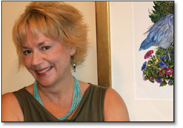

About the Artist
Crystal lives in a townhouse in False Creek, Vancouver, British Columbia, Canada, with her two cats Ziggy and Electra. She is active in the community with a number of arts groups and donates her talents to various community and non-profit organizations.
Crystal has won several arts awards, including a Senior BC Cultural Fund Award, and a Canada Council Touring Award. She has a Bachelor of Music from the University of British Columbia, where she also studied Fine Art and Architecture. Working as an architectural design consultant and illustrator, she began creating very personalized house portraits in Vancouver in the mid 80's.
Crystal has also taught art and creativity courses at post-secondary institutions and businesses in Vancouver, including Capilano College, and The University of British Columbia.
Her work has been widely exhibited in Vancouver, and Crystal now devotes herself to creating "Home and Garden Portraits", as well as personalized "Winsome Portraits" for her clients, and their loved ones.
Crystal creates these very customized works of art for clients in Vancouver, Burnaby, South Surrey BC, White Rock, Crescent Beach BC, North Vancouver, West Vancouver, Ocean Park, Langley and all over the Lower Mainland. She also has clients in the US, including Washington, New Mexico, Italy and Scotland..
"My passion is painting, and my gift and joy is to be able to give people back themselves in the form of a painting.
The study of music gave me a great appreciation for the relationship of form and content, and I have transposed the musical terms of composition, rhythm, harmony and colour in my visual work to express the passion I have for life, people and my community."
Media Coverage
Testimonials
“Crystal is aptly named. She is a sunshine personality who is able to capture the essence of a house and garden and all the creatures who share the place in a way no photographer possibly could. We have had the honour of attention from a number of darn good artists, but Crystal is tops!”
John Davis, West 10th Avenue, near City Hall, Vancouver, BC Canada
"We love collecting original art, and to our collection we wanted to add a
commissioned stylized home portrait that would capture both the character
and the love and joy we have experienced in it over the past 20 years with
our family. Crystal did a marvelous job, and we love it!. She succeeded in
capturing the house, the front garden, including our sons's ball hockey net
in the driveway, and our two family dogs at the time.
In addition to the home portrait I recently commissioned Crystal to complete
a portrait of my wife on her 50th birthday at a villa in Tuscany and
Crystal did beautiful job. We couldn't be more pleased."
Howie Young, Vancouver, BC Canada
"We love our painting and have received countless compliments - Crystal really captured the essence of our yard, life and family, including our two children, Leana and Conner. The painting brightens up our house, and on that big wall, it is like another window bringing in the light from the garden. The special touches that Crystal adds to the painting make the process, and the finished piece so much fun. We so enjoyed
working with Crystal and are very pleased with our painting."
Lynda Hogarth, Port Moody, BC Canada
.... more testimonials
 
Ziggy and Electra
|
|
|

{kind=link}